Chapter 2: Data, Features & Evaluation Setup¶
Models are only as good as their data. This chapter follows data from its sources through labelling, weak supervision and synthetic generation, exploratory analysis and cleaning, to feature engineering and feature selection. It then sets up honest evaluation with train/validation/test splits, cross-validation and time-series splits, shows how to spot data leakage, handle imbalanced classes and augment data, introduces the famous datasets every student meets, and ends with data quality checks, versioning and documentation.
2.1 Where Data Comes From: Sources, Formats and Collection¶
Every ML project starts with data, and it comes from many places: your own organisation's records and logs, public dataset libraries, APIs, sensors, surveys, purchased data and the web. Data can be neatly structured in tables or unstructured like text, images and audio. Before collecting any of it you must check that it represents the real cases you care about and that you are legally allowed to use it.
Think of it like…
Gathering data is like a chef sourcing ingredients: some come from the restaurant's own garden, some from a market, some from suppliers — and a great recipe cannot rescue spoiled or stolen ingredients.
Real-world example
At the fictional bike-share firm PedalPoint, data scientist Ines predicts station shortages. She combines 3 years of trip logs from the company database, hourly weather from a public API, city event calendars and dock sensor readings. She stores the 40 GB result as Parquet files and records each source, licence and date range in a short provenance note.
How it works¶
- Write down exactly what you want to predict and what information would plausibly help.
- List candidate sources: internal databases and logs, public repositories, APIs, sensors, surveys, vendors or the web.
- Check legality and ethics: licence terms, privacy law (such as GDPR), consent and the site's terms and robots.txt.
- Check representativeness: does the data cover the people, places and time periods the model will face?
- Extract into analysis-friendly formats (Parquet, CSV, JSON Lines) and record provenance: source, date, licence, filters applied.
Who uses it
Data engineers build the pipelines, data scientists choose and judge the sources, and legal or privacy teams approve their use.
Key takeaway
A model can only learn what is in its data: say 'garbage in, garbage out' and then explain how you would check coverage, bias and licensing.
Going deeper
- Structured data has a fixed schema of typed columns; semi-structured data such as JSON has nested, flexible fields; unstructured data — text, images, audio, video — is most of the world's data and needs feature extraction.
- Apache Parquet stores data by column with compression and types, so files are often several times smaller than CSV and analytics tools can read just the columns they need; it is the default for large tabular ML data.
- The Robots Exclusion Protocol was standardised as RFC 9309 in 2022; it signals crawler permissions but is not an access-control mechanism, and site terms and copyright law apply separately.
- Under the EU GDPR, processing personal data needs one of six lawful bases (such as consent or legitimate interests) and must respect purpose limitation and data minimisation — reusing data for a new model can need fresh justification.
- Selection bias arises when the collection process filters who appears: a loan model trained only on approved applicants never sees how rejected applicants would have behaved.
- Audits of public text datasets, such as the 2023 Data Provenance Initiative, found that licence information on popular hosting sites was frequently missing or wrong, so check the original source's licence yourself.
Common mistakes & misconceptions
- Assuming 'publicly visible' means 'free to use': web content is usually copyrighted and may contain personal data covered by privacy law.
- Collecting whatever is easy rather than what is representative: convenience samples quietly bias the model towards the easy-to-reach group.
- Losing provenance: without records of source, date and filters, you cannot reproduce, audit or legally defend the dataset later.
Try it: Load a public dataset from OpenML and save it as Parquet (pip install scikit-learn pandas pyarrow)¶
from sklearn.datasets import fetch_openml
titanic = fetch_openml('titanic', version=1, as_frame=True)
df = titanic.frame
print(df.shape) # (1309, 14)
print(df.dtypes.head())
df.to_parquet('titanic.parquet') # compact, typed, columnar
Key algorithms, models, techniques, tools & concepts¶
| Name | What it does | Example |
|---|---|---|
| First-party data and event logs Your own organisation · Concept · Current · Beginner |
Data your organisation generates itself — transactions, app events, support tickets — usually the most relevant and valuable source. | PedalPoint's 3 years of trip logs show exactly when each station empties. |
| Data warehouse and lakehouse e.g. BigQuery, Snowflake, Databricks · Platform · Current · Beginner |
Central stores where company data is cleaned and queried with SQL; the usual starting point for training data. | Ines writes one SQL query joining trips and stations in the warehouse. |
| UCI Machine Learning Repository University of California, Irvine (since 1987) · Platform · Current · Beginner |
One of the oldest public collections of ML datasets, widely used in teaching and papers. | Students practise classification on UCI's Adult income and Wine Quality datasets. |
| Kaggle Datasets Kaggle (Google) · Platform · Current · Beginner |
A huge community library of datasets with notebooks and competitions attached. | Ines finds a city bike-trip dataset with example notebooks to compare against. |
| Hugging Face Datasets Hub Hugging Face · Platform · Current · Beginner |
Public hub of hundreds of thousands of datasets, loadable in one line with the datasets library. | load_dataset('imdb') downloads 50,000 labelled film reviews. |
| OpenML OpenML community · Platform · Current · Intermediate |
Open platform sharing datasets, tasks and benchmark results, built into scikit-learn's fetch_openml. | fetch_openml('titanic', version=1) returns the passenger table as a DataFrame. |
| Google Dataset Search Google (launched 2018) · Tool · Current · Beginner |
A search engine for datasets published across the web, based on schema.org metadata. | Searching 'hourly air quality London' finds government and university datasets. |
| APIs as data sources Web services · Concept · Current · Beginner |
Programmatic interfaces that return fresh data such as weather, prices or maps, usually with rate limits and terms. | PedalPoint pulls hourly temperature and rainfall for each station from a weather API. |
| Web scraping and robots.txt IETF RFC 9309 (2022) · Standard · Current · Intermediate |
Automatically collecting web pages; robots.txt states crawler permissions, while site terms and copyright still apply. | A crawler skips paths disallowed in robots.txt and respects a one-request-per-second limit. |
| Sensors and IoT data Devices and telemetry · Concept · Current · Beginner |
Streams of readings from machines, phones, vehicles and cameras, often high-volume and noisy. | Dock sensors report every 30 seconds how many bikes each station holds. |
| Structured vs unstructured data Data management · Concept · Current · Beginner |
Structured data fits typed tables; unstructured data such as text, images and audio has no fixed schema. | Trip records are structured; customer complaint emails are unstructured. |
| CSV and JSON Lines RFC 4180 (CSV); JSON Lines convention · Standard · Current · Beginner |
Simple text formats: CSV for flat tables, JSON Lines (one JSON object per line) for nested records and text datasets. | LLM fine-tuning data is usually stored as JSONL, one prompt-response pair per line. |
| Apache Parquet Apache Software Foundation · Standard · Current · Beginner |
Compressed, column-oriented file format that keeps data types and loads selected columns quickly. | Ines's 40 GB of CSV trips shrink to about 6 GB as Parquet. |
| Data licensing and privacy law e.g. Creative Commons, GDPR (EU 2016/679) · Regulation · Current · Intermediate |
Licences say how data may be reused; privacy laws govern any data about identifiable people. | A CC BY dataset may be used commercially with attribution; customer emails need a GDPR lawful basis. |
2.2 Labelling and Annotation: Getting the Right Answers¶
Supervised learning needs labels — the correct answer for each example — and usually people have to provide them. Labelling (annotation) means humans tag images, text, audio or video following written guidelines, often using special tools, sometimes through crowdsourcing platforms or specialist vendors. Quality checks make sure the labels are consistent, because a model learns the labellers' mistakes too.
Think of it like…
Labelling is like marking exam papers with a shared answer scheme: if the markers interpret the scheme differently, the grades — and anything learned from them — become unreliable.
Real-world example
Radiology start-up ScanWise needs 20,000 chest X-rays labelled for pneumonia. Lead annotator Dr Osei writes a 12-page guideline with example images, runs a pilot of 200 images with three radiologists, and finds agreement of only κ = 0.55. After clarifying borderline cases, agreement rises to κ = 0.78. Every image gets two readers, and disagreements go to a senior radiologist.
How it works¶
- Define the label set and write clear guidelines with examples of easy, hard and borderline cases.
- Run a small pilot with several annotators and measure inter-annotator agreement.
- Refine guidelines until agreement is acceptable, then label at scale with a suitable tool or workforce.
- Build in quality control: overlapping labels, hidden gold-standard questions and spot checks.
- Resolve disagreements (majority vote or expert adjudication) and export labels with version and guideline numbers.
Who uses it
Data annotators, annotation project managers, domain experts (doctors, lawyers), data-operations teams and labelling vendors; ML engineers design the label schema and quality checks.
Key takeaway
Measure agreement with Cohen's kappa (two raters) or Krippendorff's alpha (many raters), and remember that human disagreement sets a ceiling on achievable model accuracy.
Going deeper
- Common annotation types are class labels, bounding boxes, polygons and pixel masks (segmentation), keypoints, text spans for named entities, transcripts for audio, and pairwise preferences for LLM answers.
- Cohen's kappa corrects raw agreement for chance; on the widely used Landis and Koch scale, 0.61-0.80 counts as substantial agreement and above 0.80 as almost perfect.
- The Dawid-Skene model (1979) estimates each annotator's reliability from overlapping labels and weights their votes, usually beating a simple majority vote on crowdsourced data.
- Costs vary enormously: simple crowd image tags may cost cents each, while expert medical or legal labels can cost dollars per item — which is why labelling often dominates a project's data budget.
- In June 2025 Meta took a 49% non-voting stake in labelling company Scale AI for a reported $14.3 billion, showing how strategic high-quality human data has become for frontier AI.
- Data-labelling work is often outsourced to low-wage countries; investigations into content-moderation labelling have raised concerns about pay and exposure to disturbing material, so responsible teams set fair-pay and well-being standards.
Common mistakes & misconceptions
- Skipping the pilot: vague guidelines create inconsistent labels that no model can learn reliably.
- Assuming crowd labels are correct: add gold-standard checks and overlapping labels, and track each annotator's accuracy.
- Changing guidelines mid-project without relabelling or versioning, leaving two incompatible label definitions mixed in one dataset.
Key algorithms, models, techniques, tools & concepts¶
| Name | What it does | Example |
|---|---|---|
| Annotation guidelines Labelling practice · Concept · Current · Beginner |
The written rulebook telling annotators exactly how to label, including examples and edge cases. | 'Label as pneumonia only if consolidation is visible in at least one lobe; see examples 14-19.' |
| Label Studio HumanSignal (open source) · Tool · Current · Beginner |
Popular open-source labelling tool for text, images, audio, video and time series, with configurable interfaces. | A team self-hosts Label Studio to tag 5,000 support tickets by topic. |
| CVAT CVAT.ai (originally Intel, open source) · Tool · Current · Intermediate |
Open-source computer-vision annotation tool for boxes, polygons, masks, keypoints and video tracking. | Annotators draw boxes around pedestrians across 10,000 dash-cam frames with interpolation between keyframes. |
| Labelbox Labelbox · Platform · Current · Intermediate |
Commercial data-labelling and curation platform with workforce options and model-assisted labelling. | A retailer manages product-image labelling and reviewer queues in Labelbox. |
| Amazon SageMaker Ground Truth Amazon Web Services · Service · Current · Intermediate |
AWS labelling service supporting private teams, vendors or public crowds, with automated labelling options. | A logistics firm labels parcel photos with its own staff through Ground Truth. |
| Amazon Mechanical Turk Amazon (since 2005) · Platform · Current · Beginner |
Crowdsourcing marketplace where workers complete small paid tasks such as image tagging. | ImageNet's millions of images were labelled largely through Mechanical Turk workers. |
| Scale AI Scale AI (Meta holds 49% non-voting stake since 2025) · Organisation · Current · Intermediate |
Large data-labelling and AI-data company serving autonomous-driving, government and frontier-model customers. | An AV company outsources lidar point-cloud labelling to a managed vendor. |
| Prodigy Explosion (makers of spaCy) · Tool · Current · Intermediate |
Scriptable annotation tool focused on fast, model-in-the-loop labelling for NLP and vision. | A researcher labels 2,000 named entities in an afternoon, accepting or rejecting model suggestions. |
| Bounding boxes and segmentation masks Computer-vision annotation · Concept · Current · Beginner |
Boxes mark an object's rough location; masks mark its exact pixels — slower but far more precise. | A box around a tumour takes 5 seconds; an exact mask may take 2 minutes. |
| Cohen's kappa Jacob Cohen (1960) · Metric · Current · Intermediate |
Agreement between two annotators, corrected for agreement expected by chance; 1 is perfect, 0 is chance. | Two radiologists agree on 90% of images, but kappa is 0.78 once chance is removed. |
| Krippendorff's alpha Klaus Krippendorff · Metric · Current · Advanced |
Agreement measure for any number of annotators, missing ratings and different label types. | Five crowd workers rating toxicity on a 1-5 scale reach alpha = 0.71. |
| Gold-standard questions Crowdsourcing quality control · Technique · Current · Intermediate |
Hidden items with known answers mixed into the work to measure each annotator's accuracy. | Workers scoring below 85% on gold items are removed and their labels re-queued. |
| Label aggregation (majority vote, Dawid-Skene) Dawid & Skene (1979) · Algorithm · Current · Advanced |
Combining several annotators' labels into one, optionally weighting each by estimated reliability. | Three of five workers say 'cat'; Dawid-Skene trusts a historically accurate worker more. |
| Label noise ML data quality · Concept · Current · Intermediate |
Incorrect labels in a dataset, which lower accuracy and distort evaluation scores. | 5% of 'refund' tickets were really 'delivery' issues, confusing the classifier. |
2.3 Weak Supervision, Active Learning and Synthetic Data¶
Hand-labelling everything is slow and expensive, so teams use shortcuts. Weak supervision writes quick rules that label data roughly and combines them statistically. Active learning lets the model pick the examples it is most unsure about so humans label only those. Synthetic data is artificially generated — by simulations, statistical models or LLMs — to add volume, cover rare cases or protect privacy.
Think of it like…
Weak supervision is asking several half-reliable friends for directions and trusting the route most of them agree on; active learning is a student asking the teacher only about questions they find hard; synthetic data is a flight simulator — not real flying, but safe, cheap practice.
Real-world example
Legal-tech firm ClauseCheck must find unfair clauses in 500,000 contracts. Engineer Ravi writes 25 labelling functions such as 'contains "sole discretion" → likely unfair'. Snorkel combines them into probabilistic labels for every contract. Active learning then sends the 3,000 most uncertain clauses to lawyers, and an LLM generates 5,000 synthetic examples of rare clause types for extra training.
How it works¶
- Weak supervision: write many cheap, noisy labelling functions (keywords, patterns, existing databases, other models).
- A label model estimates each function's accuracy and correlations and outputs a probabilistic label per example.
- Active learning: train on what you have, score unlabelled data for uncertainty, send the most informative examples to humans, retrain, repeat.
- Synthetic data: generate extra examples by simulation, statistical generators or LLM prompting, then filter and check quality.
- Always validate on real, human-labelled test data — never only on synthetic or weak labels.
Who uses it
ML engineers and data scientists at companies with lots of unlabelled data, robotics and autonomous-vehicle teams using simulation, and privacy teams sharing data safely.
Key takeaway
Know the trade-off in one sentence: weak supervision trades label accuracy for label quantity, and the label model's job is to recover as much accuracy as possible.
Going deeper
- Snorkel (Stanford, 2017) popularised data programming: labelling functions may vote or abstain, and a generative label model learns their accuracies from agreement patterns without any ground truth.
- Distant supervision (Mintz et al., 2009) labels text automatically by aligning it with an existing knowledge base — for example, any sentence mentioning a company and its known CEO is a 'CEO-of' example.
- Active learning strategies include uncertainty sampling (lowest confidence or highest entropy), query-by-committee (where models disagree) and diversity sampling; they often reach target accuracy with a fraction of the labels.
- LLM-generated training data took off with Self-Instruct (2022), where a model writes its own instruction-response pairs; today LLMs also act as first-pass annotators whose labels humans audit.
- Shumailov et al. (Nature, 2024) showed 'model collapse': models trained recursively on their own generated output progressively lose the rare tails of the real distribution, so synthetic data should be mixed with real data.
- Synthetic tabular data tools such as the open-source Synthetic Data Vault learn table statistics and sample new rows; NVIDIA reportedly acquired synthetic-data start-up Gretel in March 2025.
Common mistakes & misconceptions
- Evaluating on synthetic or weakly labelled data: test sets must be real and carefully hand-labelled, or scores will be misleading.
- Assuming synthetic data is automatically private: generators can memorise and reproduce real records unless trained with formal privacy guarantees.
- Writing labelling functions that all share the same blind spot: correlated rules give false confidence, so aim for diverse signals.
Key algorithms, models, techniques, tools & concepts¶
| Name | What it does | Example |
|---|---|---|
| Weak supervision ML labelling approach · Technique · Current · Intermediate |
Training with labels produced by cheap, noisy sources (rules, heuristics, other models) instead of careful hand-labelling. | 25 keyword rules label 500,000 contracts overnight at roughly 80% accuracy. |
| Labelling functions Snorkel data programming · Concept · Current · Intermediate |
Small programs that vote a label or abstain for each example, encoding domain heuristics. | def lf_refund(x): return REFUND if 'money back' in x.text else ABSTAIN |
| Snorkel Stanford (2017); Snorkel AI · Framework · Current · Intermediate |
Open-source weak-supervision framework that combines labelling functions with a learned label model. | ClauseCheck's 25 functions are combined by Snorkel into probabilistic labels. |
| Distant supervision Mintz et al. (2009) · Technique · Current · Advanced |
Creating labels by matching data to an existing knowledge base or database. | Sentences mentioning both a drug and a disease listed as treatment pairs become positive examples. |
| Active learning ML labelling approach (Settles survey, 2009) · Technique · Current · Intermediate |
The model chooses which unlabelled examples humans should label next, to learn the most from the fewest labels. | Labelling 3,000 chosen clauses matches the accuracy of 15,000 random ones. |
| Uncertainty sampling Active-learning strategy · Algorithm · Current · Intermediate |
Picks examples where the model is least confident, such as probabilities near 0.5. | A clause scored 0.51 'unfair' goes to a lawyer; one scored 0.99 does not. |
| Model-assisted pre-labelling Labelling practice · Technique · Current · Beginner |
A model or LLM proposes labels and humans accept or correct them, speeding annotation several-fold. | An LLM drafts topic tags for 10,000 tickets; agents fix about 12% of them. |
| Synthetic data Data generation · Concept · Current · Beginner |
Artificially generated data that imitates real data, used to add volume, cover rare cases or protect privacy. | A bank generates synthetic transactions to share with a vendor without exposing customers. |
| Simulation-generated data e.g. NVIDIA Omniverse Replicator, CARLA · Technique · Current · Intermediate |
Rendering virtual scenes with automatic, perfect labels for vision and robotics training. | A warehouse robot learns grasping on 1 million simulated boxes before touching real ones. |
| Synthetic Data Vault (SDV) MIT DAI Lab; DataCebo · Library · Current · Intermediate |
Open-source Python library that learns relational and tabular data patterns and generates synthetic rows. | A student generates a realistic fake customer table to practise SQL and ML. |
| LLM-generated training data e.g. Self-Instruct (2022) · Technique · Current · Intermediate |
Using large language models to write examples, instructions or labels for training smaller models. | An LLM writes 5,000 varied examples of rare clause types for the classifier. |
| Model collapse Shumailov et al., Nature (2024) · Concept · Current · Advanced |
Quality loss when models are repeatedly trained on model-generated data, forgetting rare real patterns. | After several generations trained on synthetic text, outputs become bland and repetitive. |
| Differentially private synthetic data Privacy engineering · Technique · Emerging · Advanced |
Synthetic data generated with a formal privacy guarantee limiting what it reveals about any individual. | A census office releases DP-synthetic microdata for researchers instead of raw records. |
2.4 Exploratory Data Analysis and Visualisation¶
Exploratory data analysis (EDA) means getting to know your data before modelling: how many rows and columns, what types, which values are missing, how each variable is distributed and how variables relate to each other and to the target. Charts reveal problems and patterns that summary numbers hide.

Think of it like…
EDA is walking around a used car before buying it — kicking the tyres, looking under the bonnet, checking the mileage — instead of trusting the advert.
Real-world example
Before predicting house prices for HomeHarbour, Nadia runs EDA. A histogram shows prices are right-skewed, so she plans a log transform. A box plot reveals a 'house' with 99 bedrooms — a typo. A scatter plot shows price rising with floor area but flattening above 250 m². A correlation heatmap shows 'rooms' and 'bedrooms' are 0.93 correlated.
How it works¶
- Check shape, column types, memory and a few sample rows.
- Summarise each column: counts, missing values, unique values, min, max, mean, median.
- Plot distributions: histograms for numbers, bar charts for categories, including the target.
- Plot relationships: scatter plots, box plots by category, correlation heatmaps, pair plots.
- Write down findings and decisions: fixes, transforms, features to create, questions for domain experts.
Who uses it
Data analysts and data scientists do EDA on every project; it is also a standard part of take-home interview tasks.
Key takeaway
Always look at the data, not just its summary statistics — Anscombe's quartet shows four datasets with identical means, variances and correlations that look completely different when plotted.
Going deeper
- John Tukey's 1977 book 'Exploratory Data Analysis' established the idea of looking at data before testing hypotheses and introduced the box plot, whose whiskers conventionally reach 1.5 × IQR beyond the quartiles.
- Anscombe's quartet (1973) and the Datasaurus Dozen (Autodesk, 2017) are datasets with near-identical summary statistics but wildly different shapes, including a dinosaur — the classic argument for plotting.
- Skewness tells you whether a log or power transform may help; a long right tail in prices, incomes or counts is very common and can hurt linear models.
- Automated profiling tools such as ydata-profiling (formerly pandas-profiling) generate an HTML report of types, distributions, correlations, missingness and duplicates in one call, a good starting point for wide tables.
- Do the deep EDA on the training split only once splitting is decided, so insights about the test set do not leak into your modelling choices.
- High-cardinality columns (thousands of unique values) such as IDs, postcodes or free text need special encoding or should be dropped, and EDA is where you spot them.
Common mistakes & misconceptions
- Relying only on describe(): averages hide skew, outliers, gaps and clusters that a plot shows at once.
- Reading too much into correlations: a correlation of 0.0 can hide a strong curved relationship, and high correlation does not prove causation.
- Exploring the test set in detail: decisions influenced by test data make the final score optimistic.
Try it: A five-minute EDA with pandas and seaborn¶
import seaborn as sns
import matplotlib.pyplot as plt
df = sns.load_dataset('penguins')
df.info() # types and non-null counts
print(df.describe()) # numeric summaries
print(df.isna().sum()) # missing values per column
print(df['species'].value_counts()) # class balance
sns.pairplot(df, hue='species') # relationships by class
plt.show()
Key algorithms, models, techniques, tools & concepts¶
| Name | What it does | Example |
|---|---|---|
| df.info() and df.describe() pandas · Tool · Current · Beginner |
First-look pandas commands: column types and non-null counts, then count, mean, std, min, quartiles and max. | describe() reveals a minimum floor area of 0 m² — clearly an error. |
| Histogram Data visualisation · Technique · Current · Beginner |
Bars showing how often values fall in each range; reveals skew, gaps, spikes and multiple peaks. | House prices show a long right tail, suggesting a log transform. |
| Box plot John Tukey (1970s) · Technique · Current · Beginner |
Shows median, quartiles and points beyond 1.5 × IQR; great for comparing groups and spotting outliers. | A box plot of bedrooms exposes the 99-bedroom typo instantly. |
| Scatter plot Data visualisation · Technique · Current · Beginner |
Plots two numeric variables against each other to reveal trends, curves, clusters and outliers. | Price versus area rises steadily, then flattens above 250 m². |
| Pair plot e.g. seaborn.pairplot · Technique · Current · Beginner |
A grid of scatter plots for every pair of variables, with distributions on the diagonal. | Colouring penguin measurements by species shows which features separate the classes. |
| Correlation heatmap Data visualisation · Technique · Current · Beginner |
A colour-coded matrix of pairwise correlations that highlights redundant or related features. | 'rooms' and 'bedrooms' at 0.93 signals near-duplicate information. |
| value_counts and bar charts pandas / visualisation · Technique · Current · Beginner |
Counting each category's frequency, essential for spotting rare categories and class imbalance. | Only 1.8% of transactions are labelled fraud — a strongly imbalanced target. |
| Missingness plot e.g. missingno library · Tool · Current · Intermediate |
Visualises where values are missing and whether gaps in different columns occur together. | Income and employer are always missing together, pointing to one optional form section. |
| ydata-profiling YData (formerly pandas-profiling) · Tool · Current · Beginner |
Generates a full HTML data-profile report — types, distributions, correlations, missingness, duplicates — from a DataFrame. | ProfileReport(df).to_file('report.html') gives the team a shareable first look. |
| Anscombe's quartet Francis Anscombe (1973) · Dataset · Current · Beginner |
Four small datasets with identical summary statistics but completely different scatter plots. | One is a straight line, another a curve — same mean, variance and correlation. |
| Datasaurus Dozen Matejka & Fitzmaurice, Autodesk (2017) · Dataset · Current · Beginner |
Thirteen datasets sharing summary statistics, one shaped like a dinosaur, showing why plotting matters. | A lecturer uses it to make students plot before they summarise. |
| Target distribution check ML practice · Technique · Current · Beginner |
Inspecting the label's distribution for imbalance, skew or odd values before choosing models and metrics. | A churn rate of 3% tells Tomás accuracy alone will be a misleading metric. |
| Cardinality check ML practice · Technique · Current · Intermediate |
Counting unique values per column to find IDs, constants and high-cardinality categories needing special handling. | customer_id has 120,000 unique values in 120,000 rows — drop it as a feature. |
| Exploratory Data Analysis (Tukey, 1977) John W. Tukey · Resource · Legacy · Intermediate |
The book that founded EDA as a discipline, emphasising graphical exploration before formal testing. | Its stem-and-leaf plots and box plots are still taught in statistics courses. |
2.5 Data Cleaning: Missing Values, Outliers and Duplicates¶
Real data is messy: values are missing, some are impossible or extreme, rows are duplicated, units and spellings are inconsistent. Data cleaning finds and fixes these problems — by dropping, correcting, filling in (imputing) or flagging — so the model learns real patterns instead of errors.

Think of it like…
Cleaning data is like washing and sorting vegetables before cooking: throw out the rotten ones, trim the bruised bits, and do not put the same carrot in the pot twice.
Real-world example
At the fictional clinic network CarePath, analyst Yusuf prepares 60,000 patient visits. 14% lack blood pressure, so he imputes the median per age group and adds a 'bp_missing' flag. Heights of 1.75 recorded as metres instead of centimetres are converted. A weight of 900 kg is set to missing. 2,300 duplicate visits from a system migration are removed.
How it works¶
- Profile problems: missing counts, impossible values, unexpected categories, duplicate rows and mixed units.
- Fix obvious errors at the source if possible (unit conversions, typos, inconsistent spellings).
- Decide per column how to handle missing values: drop, impute (median, most-frequent, model-based) and optionally add a missing-indicator.
- Detect outliers with rules (IQR, z-score) or domain limits; decide whether each is an error to fix or a real rare case to keep.
- Remove exact and near-duplicate records, then write the cleaning steps as code inside a pipeline so they are reproducible.
Who uses it
Data scientists, analysts and data engineers spend a large share of their time here; data-quality engineers automate the checks.
Key takeaway
Fit imputers and outlier rules on the training split only, then apply them to validation and test data — otherwise you leak information.
Going deeper
- Rubin's 1976 taxonomy: MCAR (missing completely at random), MAR (missingness depends on other observed columns) and MNAR (depends on the missing value itself). Simple imputation is reasonable for MCAR but can bias results for MNAR.
- scikit-learn provides SimpleImputer (mean, median, most frequent, constant), KNNImputer (average of nearest neighbours) and IterativeImputer (MICE-style, modelling each column from the others).
- Gradient-boosting libraries such as XGBoost, LightGBM and scikit-learn's HistGradientBoosting handle missing values natively by learning which branch missing values should follow.
- The IQR rule flags values below Q1 − 1.5×IQR or above Q3 + 1.5×IQR; the z-score rule flags |z| > 3. Both assume roughly unimodal data, so always confirm with domain knowledge.
- Near-duplicate detection at scale uses MinHash and locality-sensitive hashing; Lee et al. (2021) found a single 61-word sentence repeated over 60,000 times in the C4 web corpus and showed deduplication improves language models.
- Winsorising caps extreme values at chosen percentiles (such as the 1st and 99th) instead of deleting rows, keeping the sample size while limiting the influence of outliers.
Common mistakes & misconceptions
- Dropping every row with any missing value: you may lose most of your data and bias what remains.
- Deleting all outliers automatically: in fraud or fault detection the outliers are often exactly what you want to find.
- Cleaning by hand in a spreadsheet: undocumented manual fixes cannot be repeated on new data or audited later.
Try it: Impute missing values and flag them with scikit-learn¶
import numpy as np
from sklearn.impute import SimpleImputer
X_train = np.array([[120, 70], [np.nan, 80], [140, np.nan], [130, 75]])
imp = SimpleImputer(strategy='median', add_indicator=True)
print(imp.fit_transform(X_train))
# columns: bp, pulse, bp_was_missing, pulse_was_missing
Key algorithms, models, techniques, tools & concepts¶
| Name | What it does | Example |
|---|---|---|
| MCAR, MAR and MNAR Donald Rubin (1976) · Concept · Current · Intermediate |
Three mechanisms of missingness — completely random, explained by other data, or dependent on the missing value itself. | High earners skipping the income question is MNAR; simple mean imputation will underestimate income. |
| Listwise deletion Missing-data handling · Technique · Current · Beginner |
Dropping every row with a missing value; simple but wasteful and biased unless data is MCAR. | Dropping rows with any gap shrinks CarePath's 60,000 visits to 31,000. |
| SimpleImputer scikit-learn · Library · Current · Beginner |
Fills missing values with the column mean, median, most frequent value or a constant. | SimpleImputer(strategy='median') fills missing blood pressure with 128. |
| KNNImputer scikit-learn · Library · Current · Intermediate |
Fills a missing value using the average of the most similar complete rows. | A missing cholesterol value is estimated from the five most similar patients. |
| Iterative imputation (MICE) van Buuren; scikit-learn IterativeImputer · Algorithm · Current · Advanced |
Models each column with missing values as a function of the others, cycling until estimates stabilise. | Blood pressure is predicted from age, weight and medication, then refined over 10 rounds. |
| Missing-value indicator Feature engineering · Technique · Current · Beginner |
A 0/1 column recording that a value was missing, since missingness itself can be predictive. | Patients with no recorded weight were often emergency cases — the flag helps the model. |
| IQR outlier rule John Tukey · Technique · Current · Beginner |
Flags values more than 1.5 interquartile ranges below the first or above the third quartile. | With Q1 = 60 kg and Q3 = 90 kg, weights below 15 or above 135 kg are flagged. |
| z-score outlier rule Descriptive statistics · Technique · Current · Beginner |
Flags values more than about 3 standard deviations from the mean; sensitive to the outliers themselves. | A heart rate with z = 6.2 is checked against the device log. |
| Winsorising (capping) Charles Winsor · Technique · Current · Intermediate |
Replaces extreme values with chosen percentile limits instead of deleting them. | Order values above the 99th percentile (€2,400) are capped at €2,400. |
| Exact deduplication Data cleaning · Technique · Current · Beginner |
Removing rows that are identical across all or key columns. | df.drop_duplicates(subset=['patient_id', 'visit_time']) removes 2,300 migrated duplicates. |
| Near-duplicate detection (MinHash) Andrei Broder (1997) · Algorithm · Current · Advanced |
Hashing-based method to find documents or records that are almost, but not exactly, the same. | A web corpus drops pages that share 90% of their text with another page. |
| Standardising categories and units Data cleaning · Technique · Current · Beginner |
Making equivalent values identical — spellings, cases, units, date formats — so they are counted together. | 'N.Y.', 'NY' and 'new york' all become 'New York'. |
| Data type correction Data cleaning · Technique · Current · Beginner |
Converting columns to proper types: numbers stored as text, dates as strings, booleans as 'Y'/'N'. | pd.to_datetime turns '03/04/2025' strings into real dates — after confirming day-month order. |
| Cleaning pipeline ML engineering practice · Concept · Current · Intermediate |
Cleaning steps written as reusable code applied identically to training and live data. | The same scikit-learn Pipeline imputes and caps values in training and in production. |
2.6 Feature Engineering I: Scaling, Transforming and Combining Numbers¶
Feature engineering means turning raw data into inputs that make the pattern easier for a model to learn. For numeric columns this includes scaling them to comparable ranges, transforming skewed values (for example with a logarithm), binning, and creating new features such as ratios, differences and interactions that capture domain knowledge.
Three common scalers
| StandardScaler | MinMaxScaler | RobustScaler | |
|---|---|---|---|
| Formula | (x − mean) / std | (x − min) / (max − min) | (x − median) / IQR |
| Typical output | mean 0, std 1 | range 0 to 1 | median 0 |
| Outlier sensitivity | Medium | High | Low |
| Good for | Linear models, SVM, PCA | Neural nets, pixel data | Data with outliers |
Pick robust scaling when outliers are present; trees need none of these.
Think of it like…
It is like converting a recipe's mixed units — cups, grams, ounces — into one system and adding helpful notes like 'sugar per serving', so the cook can compare and follow it easily.
Real-world example
For HomeHarbour's price model, Nadia log-transforms skewed prices, standardises floor area and distance so neither dominates a k-nearest-neighbours model, and creates 'price per m² in the postcode last year' and 'age of building' features. Her validation error falls from €31,000 to €19,000 — more than switching algorithms achieved.
How it works¶
- Decide which models you will use: distance- and gradient-based models need scaling, tree models mostly do not.
- Transform skewed variables (log, Box-Cox, Yeo-Johnson) so they are closer to symmetric.
- Scale features to comparable ranges (standardisation, min-max, robust scaling).
- Create domain features: ratios, differences, aggregates, interactions and bins.
- Wrap everything in a Pipeline/ColumnTransformer fitted on training data only.
Who uses it
Data scientists and ML engineers working on tabular data — in finance, retail, insurance, healthcare — where good features often matter more than the choice of algorithm.
Key takeaway
Know which models are scale-sensitive: k-NN, SVMs, linear/logistic regression with regularisation, PCA and neural networks yes; decision trees and tree ensembles no.
Going deeper
- Standardisation is needed whenever a model uses distances or penalties: in k-NN an unscaled income in euros would swamp age in years simply because its numbers are thousands of times larger.
- log1p(x) = log(1 + x) handles zeros safely; Box-Cox requires strictly positive values, while Yeo-Johnson also handles zero and negative values — both are available in scikit-learn's PowerTransformer.
- QuantileTransformer maps each feature to a uniform or normal distribution using ranks, which tames heavy tails and outliers but distorts distances between original values.
- Polynomial and interaction features let linear models capture curves and combined effects; with 20 inputs, degree-2 expansion already creates 230 features, so pair it with regularisation.
- Tree ensembles find interactions and thresholds themselves, which is one reason gradient boosting needs less manual numeric engineering than linear models.
- Domain ratios often carry the strongest signal: debt-to-income in credit, price per square metre in property, and clicks per impression in advertising.
Common mistakes & misconceptions
- Fitting the scaler on the full dataset before splitting: the test set's mean and spread leak into training.
- Forgetting to apply the identical fitted transformation in production, so live inputs arrive on a different scale.
- Creating hundreds of polynomial features without regularisation, which invites overfitting.
Try it: Scale numeric and log-transform skewed columns in one pipeline¶
import numpy as np
from sklearn.compose import ColumnTransformer
from sklearn.pipeline import make_pipeline
from sklearn.preprocessing import FunctionTransformer, StandardScaler
prep = ColumnTransformer([
('log_scale', make_pipeline(FunctionTransformer(np.log1p), StandardScaler()), ['income']),
('scale', StandardScaler(), ['age', 'area_m2']),
])
# prep.fit(train_df); prep.transform(test_df) -> fitted on training data only
Key algorithms, models, techniques, tools & concepts¶
| Name | What it does | Example |
|---|---|---|
| StandardScaler (z-score standardisation) scikit-learn · Library · Current · Beginner |
Rescales each feature to mean 0 and standard deviation 1 using training-set statistics. | Ages (mean 41, SD 12) become values like −0.5 and +1.6. |
| MinMaxScaler scikit-learn · Library · Current · Beginner |
Rescales each feature linearly to a fixed range, usually 0 to 1; sensitive to extreme values. | Pixel brightness 0-255 is divided down to 0-1 before a neural network. |
| RobustScaler scikit-learn · Library · Current · Intermediate |
Centres on the median and scales by the interquartile range, so outliers barely affect it. | Transaction amounts with rare €50,000 payments are scaled robustly. |
| Normalizer (unit-norm rows) scikit-learn · Library · Current · Intermediate |
Scales each example (row) to length 1, useful when only direction matters, as with text vectors. | TF-IDF document vectors are L2-normalised before cosine comparisons. |
| Log transform Feature engineering · Technique · Current · Beginner |
Applying log(x) or log(1 + x) to compress long right tails into a more symmetric shape. | Incomes from €8,000 to €2 million become a manageable range of about 9 to 14.5. |
| Box-Cox and Yeo-Johnson Box & Cox (1964); Yeo & Johnson (2000) · Technique · Current · Intermediate |
Power transforms that learn the best exponent to make data more normal; Yeo-Johnson also handles zeros and negatives. | PowerTransformer(method='yeo-johnson') normalises account balances that can be negative. |
| QuantileTransformer scikit-learn · Library · Current · Intermediate |
Maps values through their ranks to a uniform or normal distribution, neutralising heavy tails. | Web-session durations with extreme values become evenly spread between 0 and 1. |
| Binning (discretisation) e.g. scikit-learn KBinsDiscretizer · Technique · Current · Beginner |
Grouping a numeric feature into ranges, which can capture non-linear effects in linear models. | Ages become 18-25, 26-40, 41-60 and 61+ for an insurance pricing model. |
| Polynomial features scikit-learn PolynomialFeatures · Technique · Current · Intermediate |
Adds squares and products of features so a linear model can fit curves and interactions. | Adding area² lets a linear model capture prices flattening for very large homes. |
| Interaction features Feature engineering · Technique · Current · Intermediate |
New features combining two or more inputs, capturing effects that depend on both together. | 'Is weekend × is raining' predicts bike demand better than either alone. |
| Ratio and difference features Domain-driven feature engineering · Technique · Current · Beginner |
Dividing or subtracting related quantities to express relative meaning the raw columns hide. | Debt ÷ income = 0.45 tells a lender far more than either number alone. |
| Group aggregate features Feature engineering · Technique · Current · Intermediate |
Statistics computed over related records, such as a customer's average spend or a postcode's median price. | 'Customer's mean order value in last 90 days' feeds a churn model. |
| ColumnTransformer and Pipeline scikit-learn · Library · Current · Beginner |
Tools that apply different preprocessing to different columns and chain steps with the model, preventing leakage. | One pipeline scales numbers, encodes categories and trains the model with a single fit(). |
| Scale-sensitive vs scale-invariant models ML practice · Concept · Current · Beginner |
Distance- and gradient-based models need scaled inputs; tree-based models split on thresholds and do not. | Scaling changes a k-NN model's accuracy a lot but leaves a random forest unchanged. |
2.7 Feature Engineering II: Categories, Text and Dates¶
Models need numbers, so non-numeric data must be encoded. Categories such as colour or city become numbers via one-hot, ordinal, target or hashing encodings. Text becomes numbers by counting words (bag of words) and weighting rare, informative words more (TF-IDF), or by using embeddings. Dates are split into useful parts like hour, weekday and month, often encoded as cycles.

Think of it like…
Encoding is translation: you are translating 'Tuesday', 'Lisbon' and 'great product, slow delivery' into the only language a model speaks — numbers — without losing the meaning.
Real-world example
For food-delivery firm DishDash, Kofi predicts delivery delays. 'City' (12 values) is one-hot encoded; 'restaurant_id' (8,000 values) gets target encoding with cross-fitting; order time becomes hour-of-day as sine and cosine plus 'is_weekend'; and customer comments become TF-IDF vectors of words and two-word phrases, catching 'cold food' complaints.
How it works¶
- Low-cardinality categories with no order: one-hot encode them.
- Ordered categories (small < medium < large): ordinal encode them in the right order.
- High-cardinality categories: target encoding (with cross-fitting), hashing, frequency encoding or learned embeddings.
- Text: clean and tokenise, then use bag-of-words or TF-IDF (with n-grams), or pretrained sentence embeddings.
- Dates and times: extract parts (hour, weekday, month, holiday flags), encode cycles with sine/cosine, and build lag and rolling features for time series.
Who uses it
Data scientists on tabular and text problems — e-commerce, marketing, logistics, finance — and anyone building features for classic ML models.
Key takeaway
Never ordinal-encode unordered categories for linear models: mapping Paris=1, Rome=2, Oslo=3 tells the model Oslo is 'three times' Paris.
Going deeper
- TF-IDF multiplies a term's frequency in a document by its inverse document frequency; scikit-learn's smoothed version uses idf = ln((1 + n) / (1 + df)) + 1 and then L2-normalises each document vector.
- One-hot encoding a column with k categories creates k binary columns (or k − 1 if one is dropped to avoid redundancy in unregularised linear models); with thousands of categories this explodes the feature count.
- Target encoding replaces a category with the average target for that category; scikit-learn's TargetEncoder (added in version 1.3, 2023) uses internal cross-fitting and smoothing to avoid leaking each row's own label.
- The hashing trick maps categories or words into a fixed number of columns with a hash function, needing no stored vocabulary; occasional collisions are the price for constant memory.
- Cyclical encoding uses sin(2π·hour/24) and cos(2π·hour/24) so that 23:00 and 00:00 end up close together, which a plain 0-23 number does not achieve.
- Pretrained sentence-embedding models turn text into dense vectors of a few hundred to a few thousand numbers that capture meaning; they often beat TF-IDF on short or paraphrased text but cost more to compute.
Common mistakes & misconceptions
- Target encoding without cross-fitting: each row 'sees' its own label, producing excellent training scores and poor real performance.
- Fitting the vocabulary or encoder on all data: words or categories seen only in the test set leak in — fit on training data and handle unknowns.
- Treating hour 23 and hour 0 as far apart: use cyclical encoding or categorical hours instead.
Try it: One-hot encoding and TF-IDF in scikit-learn¶
from sklearn.preprocessing import OneHotEncoder
from sklearn.feature_extraction.text import TfidfVectorizer
ohe = OneHotEncoder(handle_unknown='ignore')
print(ohe.fit_transform([['Lisbon'], ['Porto'], ['Lisbon']]).toarray())
tfidf = TfidfVectorizer(ngram_range=(1, 2))
X = tfidf.fit_transform(['cold food again', 'fast delivery hot food', 'food was cold'])
print(tfidf.get_feature_names_out())
Key algorithms, models, techniques, tools & concepts¶
| Name | What it does | Example |
|---|---|---|
| One-hot encoding scikit-learn OneHotEncoder; pandas get_dummies · Technique · Current · Beginner |
Creates one 0/1 column per category, so the model treats categories as unordered. | City = Lisbon becomes [1, 0, 0] across columns Lisbon, Porto, Faro. |
| Ordinal encoding scikit-learn OrdinalEncoder · Technique · Current · Beginner |
Maps categories to integers in a meaningful order; right for ordered categories and fine for tree models. | Size small/medium/large becomes 0/1/2. |
| Target encoding scikit-learn TargetEncoder (v1.3+) · Technique · Current · Intermediate |
Replaces each category with a smoothed average of the target for that category, using cross-fitting. | Restaurant 4512's average delay of 14 minutes becomes its feature value. |
| Feature hashing (hashing trick) Weinberger et al. (2009); scikit-learn FeatureHasher · Technique · Current · Intermediate |
Hashes categories or words into a fixed number of columns, avoiding a stored vocabulary. | Millions of ad IDs are hashed into 2²⁰ columns for a click-prediction model. |
| Frequency (count) encoding Feature engineering · Technique · Current · Beginner |
Replaces a category with how often it appears, a compact signal of popularity. | A merchant seen 12,000 times gets 12,000; a new one seen twice gets 2. |
| Rare-category grouping Feature engineering · Technique · Current · Beginner |
Merging infrequent categories into an 'Other' bucket to reduce noise and handle unseen values. | OneHotEncoder(min_frequency=50) groups tiny cities together. |
| Entity embeddings Guo & Berkhahn (2016) · Technique · Current · Advanced |
Learning a dense vector per category inside a neural network, so similar categories get similar vectors. | Store embeddings learned for sales forecasting place similar shops near each other. |
| Bag of words Classic NLP · Technique · Current · Beginner |
Represents a document by counts of each vocabulary word, ignoring word order. | 'cold food again' becomes counts: cold 1, food 1, again 1. |
| TF-IDF Karen Spärck Jones (IDF, 1972); scikit-learn TfidfVectorizer · Technique · Current · Beginner |
Weights words by frequency in a document and rarity across documents, highlighting distinctive terms. | 'cold' scores high in complaints; 'the' scores near zero everywhere. |
| N-grams Classic NLP · Technique · Current · Beginner |
Sequences of n consecutive words or characters used as features, capturing short phrases. | The bigram 'not good' carries the opposite meaning of the unigram 'good'. |
| Text normalisation (stop words, stemming, lemmatisation) Classic NLP (e.g. NLTK, spaCy) · Technique · Current · Beginner |
Lowercasing, removing very common words and reducing words to roots so variants count together. | 'Delivered', 'delivering' and 'delivery' reduce to a shared root. |
| Sentence embeddings as features e.g. sentence-transformers · Technique · Current · Intermediate |
Dense vectors from a pretrained model that capture meaning, used as inputs to classic models. | 'Meal arrived freezing' and 'food was cold' get similar vectors despite sharing no words. |
| Date-part features Feature engineering · Technique · Current · Beginner |
Extracting hour, weekday, month, quarter, holiday and payday flags from timestamps. | 'is_friday_evening' explains DishDash's demand spikes. |
| Cyclical (sine/cosine) encoding Feature engineering · Technique · Current · Intermediate |
Encodes repeating values like hour or month on a circle so the end wraps to the start. | Hour 23 and hour 0 become neighbouring points on the circle. |
| Lag and rolling-window features Time-series feature engineering · Technique · Current · Intermediate |
Past values and moving statistics of a series, computed only from information available at prediction time. | 'Orders in the same hour last week' and '7-day rolling mean' feed a demand model. |
2.8 Feature Selection: Keeping the Inputs That Matter¶
Feature selection means choosing a smaller set of useful inputs and dropping the rest. Fewer, better features make models faster, easier to explain, cheaper to run and less likely to overfit. Methods range from quick statistical filters, through wrappers that test subsets with a model, to models that select features themselves while training.
Think of it like…
Packing for a trip with a small suitcase: you keep what you will really use, drop duplicates (two identical jumpers) and leave behind things that only add weight.
Real-world example
Telecom analyst Hana at the fictional NorthTel has 420 features for a churn model. She drops 35 near-constant columns, removes 60 that correlate above 0.95 with another feature, then uses L1-regularised logistic regression and permutation importance on validation data to keep 48. Accuracy is unchanged, training is 7× faster, and the marketing team can finally understand the top drivers.
How it works¶
- Remove obviously useless features: constants, near-constants, IDs and exact duplicates.
- Apply cheap filters: correlation with the target, mutual information, chi-squared or ANOVA F-tests; remove highly inter-correlated features.
- Use embedded methods: L1 (Lasso) regularisation or tree-based importances inside a model.
- Optionally use wrapper methods (recursive feature elimination, sequential selection) to test subsets with cross-validation.
- Confirm the final set on validation data and run selection inside the cross-validation pipeline to avoid leakage.
Who uses it
Data scientists on wide tabular data (telecom, genomics, finance, marketing), and anyone needing simpler, more explainable or cheaper models.
Key takeaway
Remember the three families — filter, wrapper, embedded — with one example each: mutual information, RFE and Lasso.
Going deeper
- Filter methods score each feature independently of any model, so they are fast but can miss features that are useful only in combination with others.
- Wrapper methods train many models: recursive feature elimination repeatedly drops the weakest features, and RFECV picks the number of features by cross-validation — powerful but computationally expensive.
- Mutual information captures any kind of dependency, including non-linear ones, whereas Pearson correlation and ANOVA F-tests detect mainly linear relationships.
- Impurity-based importances from random forests are biased towards high-cardinality and continuous features; permutation importance on held-out data is a more reliable selection signal.
- The variance inflation factor (VIF) measures multicollinearity; values above about 5-10 suggest a feature is largely explained by others, which destabilises linear model coefficients.
- The curse of dimensionality: as features grow, data becomes sparse and distances less meaningful, so models need far more examples to generalise — a key motivation for selection and dimensionality reduction.
Common mistakes & misconceptions
- Selecting features on the full dataset before cross-validation: the selection step itself sees the test folds and inflates scores.
- Dropping a feature because its individual correlation is low: it may matter strongly in interaction with others.
- Treating feature importance as causal: an important feature predicts the target but does not necessarily cause it.
Try it: Filter and embedded selection in scikit-learn¶
from sklearn.datasets import load_breast_cancer
from sklearn.feature_selection import SelectKBest, mutual_info_classif, SelectFromModel
from sklearn.linear_model import LogisticRegression
from sklearn.preprocessing import StandardScaler
X, y = load_breast_cancer(return_X_y=True) # 30 features
X = StandardScaler().fit_transform(X)
print(SelectKBest(mutual_info_classif, k=10).fit_transform(X, y).shape) # (569, 10)
l1 = LogisticRegression(l1_ratio=1, solver='liblinear', C=0.1) # pure L1 (scikit-learn 1.8+ API)
print(SelectFromModel(l1).fit_transform(X, y).shape) # (569, 8): non-zero weights only
Key algorithms, models, techniques, tools & concepts¶
| Name | What it does | Example |
|---|---|---|
| VarianceThreshold scikit-learn · Library · Current · Beginner |
Removes features whose variance is below a cut-off, such as constant or almost-constant columns. | A 'country' column that is 'UK' in 99.9% of rows is dropped. |
| Correlation filter Filter method · Technique · Current · Beginner |
Drops one of each pair of features that are very highly correlated, removing redundancy. | 'Monthly charge' and 'annual charge ÷ 12' at r = 0.99: keep one. |
| Mutual information Information theory (Shannon) · Metric · Current · Intermediate |
Measures how much knowing a feature reduces uncertainty about the target, including non-linear relationships. | mutual_info_classif ranks 'contract type' as the most informative churn feature. |
| Chi-squared test Karl Pearson (1900) · Math · Current · Intermediate |
Tests dependence between non-negative or categorical features and a class label; popular for text features. | SelectKBest(chi2, k=5000) keeps the 5,000 most label-related words. |
| ANOVA F-test R. A. Fisher · Math · Current · Intermediate |
Scores how well a numeric feature separates class means; fast but detects mainly linear differences. | f_classif ranks tumour radius highly for malignant versus benign. |
| SelectKBest scikit-learn · Library · Current · Beginner |
Keeps the k highest-scoring features under a chosen statistical score function. | SelectKBest(mutual_info_classif, k=10) trims 30 features to 10. |
| Recursive feature elimination (RFE) Guyon et al. (2002); scikit-learn RFE/RFECV · Algorithm · Current · Intermediate |
Repeatedly fits a model and removes the least important features until the desired number remains. | RFECV finds 48 features give the best cross-validated churn score. |
| Sequential feature selection scikit-learn SequentialFeatureSelector · Algorithm · Current · Intermediate |
Greedily adds (forward) or removes (backward) one feature at a time based on cross-validated score. | Forward selection picks tenure first, then contract type, then support calls. |
| L1 (Lasso) selection Tibshirani (1996) · Technique · Current · Intermediate |
L1 regularisation drives some weights exactly to zero, so the model selects features while training. | With C = 0.1, L1 logistic regression keeps 8 of 30 tumour features. |
| SelectFromModel scikit-learn · Library · Current · Intermediate |
Keeps features whose importance or coefficient from a fitted model exceeds a threshold. | SelectFromModel(RandomForestClassifier()) keeps features above mean importance. |
| Permutation importance (for selection) Breiman (2001); scikit-learn · Technique · Current · Intermediate |
Measures how much a held-out score drops when one feature's values are shuffled; low drop suggests removal. | Shuffling 'customer_id_hash' changes nothing, so it is removed. |
| Boruta Kursa & Rudnicki (2010); BorutaPy · Algorithm · Current · Advanced |
Compares each feature with shuffled 'shadow' copies in a random forest and keeps those beating the best shadow. | Boruta confirms 22 genes as relevant out of 2,000 measured. |
| Variance inflation factor (VIF) Regression diagnostics · Metric · Current · Intermediate |
How much a coefficient's variance is inflated by correlation with other features; above about 5-10 is a warning. | 'Total rooms' has VIF 14 alongside bedrooms and bathrooms. |
| Curse of dimensionality Richard Bellman (1957) · Concept · Current · Intermediate |
As features increase, data becomes sparse and distance-based reasoning weakens, so far more data is needed. | k-NN degrades sharply with 500 noisy features but works well on the 20 best. |
2.9 Train, Validation and Test Splits, Cross-Validation and Time-Series Splits¶
To know whether a model works on new data, you hide some data from it. The training set teaches the model, the validation set helps choose settings, and the test set gives one final honest score. Cross-validation rotates which part is held out to get a more reliable estimate from limited data. Time-ordered data must always be split by time, training on the past and testing on the future.

Think of it like…
Training data is the textbook exercises, validation data is the mock exams you use to adjust your revision, and the test set is the real exam — you only sit it once.
Real-world example
Hospital data scientist Elif has 5,000 patients. She keeps 1,000 as a locked test set, stratified so 8% are positive like the whole dataset. On the other 4,000 she uses 5-fold stratified group cross-validation — grouping by patient so one person's repeat visits never appear in both training and validation — to compare three models, then scores the winner once on the test set.
How it works¶
- Decide the unit of independence (row, patient, customer, store) and whether time order matters.
- Carve out a final test set first and do not touch it until the end.
- On the remaining data, use a validation split or k-fold cross-validation to compare models and hyperparameters.
- Stratify by class for imbalanced classification, group by entity for repeated records, and split by time for temporal data.
- Refit the chosen model on all non-test data, evaluate once on the test set, and report that score.
Who uses it
Every data scientist and ML engineer; poor splitting is one of the most common causes of models that look great offline and fail in production.
Key takeaway
Match the split to deployment: if the model will predict next month, validate on a later month; if it will meet new customers, keep customers separate between splits.
Going deeper
- Typical splits are 70/15/15 or 80/10/10 for thousands of examples; with millions of examples a 98/1/1 split still gives tens of thousands of validation and test cases.
- k-fold cross-validation with k = 5 or 10 is standard; leave-one-out (k = n) has low bias but high variance and cost, and is mainly used on very small datasets.
- Nested cross-validation puts hyperparameter tuning inside an inner loop and performance estimation in an outer loop, avoiding the optimistic bias of reporting the tuned validation score.
- scikit-learn's TimeSeriesSplit uses expanding training windows that always precede the test window, and its gap parameter leaves a buffer so features like 7-day rolling means cannot straddle the boundary.
- GroupKFold and StratifiedGroupKFold keep all rows of one group — a patient, user or store — in the same fold, which is essential when entities have many records.
- Adversarial validation trains a classifier to tell training rows from test rows; if it succeeds easily (AUC well above 0.5) the splits differ in distribution and validation scores may mislead.
Common mistakes & misconceptions
- Randomly shuffling time-series data: the model 'sees the future' and scores look far better than reality.
- Tuning repeatedly against the test set: it silently becomes a validation set and its score is no longer honest.
- Splitting rows when one person has many rows: the model memorises individuals rather than learning patterns that transfer to new people.
Try it: Stratified 5-fold cross-validation and a time-series split¶
from sklearn.datasets import load_breast_cancer
from sklearn.linear_model import LogisticRegression
from sklearn.model_selection import StratifiedKFold, TimeSeriesSplit, cross_val_score
from sklearn.pipeline import make_pipeline
from sklearn.preprocessing import StandardScaler
X, y = load_breast_cancer(return_X_y=True)
model = make_pipeline(StandardScaler(), LogisticRegression(max_iter=1000))
cv = StratifiedKFold(n_splits=5, shuffle=True, random_state=42)
scores = cross_val_score(model, X, y, cv=cv)
print(scores.round(3), 'mean', scores.mean().round(3))
for tr, te in TimeSeriesSplit(n_splits=3, gap=2).split(list(range(12))):
print('train', tr, 'test', te) # always past -> future
Key algorithms, models, techniques, tools & concepts¶
| Name | What it does | Example |
|---|---|---|
| Training set ML practice · Concept · Current · Beginner |
The portion of data the model learns its parameters from. | 4,000 of Elif's 5,000 patients are used for training and cross-validation. |
| Validation set ML practice · Concept · Current · Beginner |
Held-out data used to compare models and tune hyperparameters during development. | Tree depth 6 beats depth 12 on validation, so depth 6 is chosen. |
| Test set (hold-out) ML practice · Concept · Current · Beginner |
Data locked away until the very end and used once to estimate real-world performance. | The final model scores 0.87 recall on the untouched 1,000 test patients. |
| train_test_split with stratify scikit-learn · Library · Current · Beginner |
Randomly splits data while keeping class proportions equal across splits. | train_test_split(X, y, test_size=0.2, stratify=y, random_state=42) |
| K-fold cross-validation Statistics / scikit-learn KFold · Technique · Current · Beginner |
Splits data into k folds and trains k times, each time validating on a different fold, then averages scores. | 5-fold CV gives accuracies 0.91, 0.93, 0.90, 0.94, 0.92 — mean 0.92. |
| Stratified K-fold scikit-learn StratifiedKFold · Technique · Current · Beginner |
K-fold that keeps each class's proportion the same in every fold; default for classification. | Each fold keeps the 8% positive rate, so no fold has zero positives. |
| Group K-fold scikit-learn GroupKFold / StratifiedGroupKFold · Technique · Current · Intermediate |
Keeps all records of one group in the same fold to prevent identity leakage. | All 14 visits of patient 2231 fall into the same fold. |
| Leave-one-out cross-validation scikit-learn LeaveOneOut · Technique · Current · Intermediate |
Each single example is held out once; maximal training data but expensive and high-variance. | A lab with 40 samples uses leave-one-out to compare two models. |
| Repeated K-fold scikit-learn RepeatedStratifiedKFold · Technique · Current · Intermediate |
Runs k-fold several times with different shuffles to reduce the luck of one particular split. | 5-fold repeated 10 times gives 50 scores and a tighter estimate. |
| Nested cross-validation ML evaluation practice · Technique · Current · Advanced |
An inner CV loop tunes hyperparameters while an outer loop estimates performance on unseen folds. | A paper reports nested-CV accuracy to avoid the optimism of tuned scores. |
| TimeSeriesSplit scikit-learn · Library · Current · Intermediate |
Time-ordered folds where training data always comes before test data, with an optional gap. | Train on January-June, test July; train January-July, test August, and so on. |
| Rolling vs expanding window Time-series validation · Technique · Current · Intermediate |
Expanding windows keep all past data; rolling windows use only the most recent fixed period. | A demand model uses a rolling 2-year window because older patterns are stale. |
| Random seed (random_state) Reproducibility practice · Concept · Current · Beginner |
A fixed number that makes random splits and training repeatable across runs. | random_state=42 lets a colleague reproduce Elif's exact folds. |
| Adversarial validation Kaggle community practice · Technique · Current · Advanced |
Training a model to distinguish train from test rows to detect distribution differences between splits. | An AUC of 0.85 reveals the test data comes from a newer app version. |
2.10 Data Leakage: When Your Model Cheats Without You Noticing¶
Data leakage happens when information that would not be available at prediction time sneaks into training or evaluation. The model then looks brilliant in testing but fails in real use. Leakage can come from features that secretly contain the answer, from preprocessing done before splitting, from the future in time-series data, or from the same person or document appearing in both training and test sets.
Leaky vs leak-free practice
| Leaky | Leak-free | |
|---|---|---|
| Preprocessing | Fit scaler on all data | Fit inside training folds |
| Time series | Random shuffle | Train past, test future |
| Entities | Same patient in both splits | Group-wise split |
| Features | Filled in after the outcome | Known at decision time |
| Duplicates | Copies across splits | Deduplicate before split |
| Model selection | Tuned on test set | Tuned on validation only |
Every leak-free choice mirrors what will actually be known at prediction time.
Think of it like…
It is like a student who scores 100% because the exam answers were accidentally printed on the back of the question paper — impressive on paper, useless when the real test comes.
Real-world example
Fintech Lendly's default model scores an amazing 0.99 AUC. Reviewer Marta finds the feature 'collections_agency_contacted' — which is only ever filled in after a loan defaults. Removing it drops AUC to 0.78. She also finds income was standardised using the whole dataset's mean before splitting, and moves scaling into a pipeline fitted on training folds only.
How it works¶
- For each feature, ask: would this value exist, with this content, at the moment we make the prediction?
- Split first, then fit every preprocessing step (scaling, imputation, encoding, feature selection) on training data only, ideally inside a Pipeline.
- For temporal problems, split by time and build features using only past information up to each prediction time.
- Keep related records — same patient, user, document or near-duplicate — in the same split.
- Be suspicious of 'too good to be true' scores and of single features with enormous importance; investigate before celebrating.
Who uses it
Data scientists, ML engineers, reviewers and auditors; leakage is a top reason for failed production models and irreproducible research.
Key takeaway
In interviews, name two kinds — target leakage (feature contains the answer) and train-test contamination (test information influences training) — and say 'use pipelines and time-aware splits'.
Going deeper
- Kaufman, Rosset and Perlich's 2012 paper 'Leakage in Data Mining' formalised the problem and described real competition leaks, including a KDD Cup 2008 breast-cancer task where patient ID numbers turned out to be predictive.
- Kapoor and Narayanan (Patterns, 2023) catalogued eight types of leakage and found it affected at least 294 published papers across 17 scientific fields, often reversing claims that ML beat simpler methods.
- Barz and Denzler (2020) found near-duplicates of training images for about 3.3% of CIFAR-10 test images and 10% of CIFAR-100 test images, slightly inflating published accuracies.
- Shortcut learning is a cousin of leakage: a 2018 study (Zech et al.) showed chest X-ray models could identify which hospital an image came from, letting them exploit site-specific disease rates rather than lung features.
- In time series, leakage often hides in features such as rolling averages or 'latest status' columns computed with data after the prediction timestamp; point-in-time correct joins prevent it.
- For large language models, the analogous problem is benchmark contamination — test questions present in web-scale pretraining data — so modern evaluations check for overlap and refresh test sets.
Common mistakes & misconceptions
- Assuming a random split protects you: it does nothing against time leakage, duplicate records or features recorded after the outcome.
- Doing feature selection or target encoding on the full dataset, then cross-validating: the selection step has already seen every label.
- Trusting a surprisingly high score: very high accuracy on a hard problem is more often a leak than a breakthrough.
Try it: Leak-free preprocessing: the scaler is refitted inside each CV fold¶
from sklearn.datasets import make_classification
from sklearn.linear_model import LogisticRegression
from sklearn.model_selection import cross_val_score
from sklearn.pipeline import make_pipeline
from sklearn.preprocessing import StandardScaler
X, y = make_classification(n_samples=1000, random_state=0)
# WRONG: StandardScaler().fit_transform(X) before CV leaks fold statistics
pipe = make_pipeline(StandardScaler(), LogisticRegression())
print(cross_val_score(pipe, X, y, cv=5).mean()) # RIGHT: fit per fold
Key algorithms, models, techniques, tools & concepts¶
| Name | What it does | Example |
|---|---|---|
| Target leakage ML evaluation · Concept · Current · Beginner |
A feature contains information about the target that will not be available when the model is used. | 'collections_agency_contacted' is only filled after default — it leaks the answer. |
| Train-test contamination ML evaluation · Concept · Current · Beginner |
Information from validation or test data influences training, making evaluation optimistic. | Imputing with the mean of all 10,000 rows lets test values shape the training data. |
| Preprocessing before splitting Common leakage source · Concept · Current · Beginner |
Fitting scalers, imputers, encoders or selectors on all data before the split leaks test statistics. | Choosing the top 50 genes using all samples, then cross-validating, inflates accuracy dramatically. |
| Temporal (look-ahead) leakage Time-series evaluation · Concept · Current · Intermediate |
Using information from after the prediction time, through shuffled splits or future-aware features. | A sales forecast uses 'monthly total' that includes the very days being predicted. |
| Group (entity) leakage ML evaluation · Concept · Current · Intermediate |
Records of the same person, device or document appear in both training and test sets. | Several photos of the same skin lesion in both splits let the model recognise lesions, not disease. |
| Duplicate leakage ML evaluation · Concept · Current · Intermediate |
Exact or near-duplicate examples split across training and test, rewarding memorisation. | Reposted product reviews appear in both splits and inflate sentiment accuracy. |
| Proxy and ID features Feature review · Concept · Current · Intermediate |
Identifiers, timestamps or file paths that accidentally encode the label or data source. | Positive scans were saved in a folder named 'urgent' — the model learned the path. |
| Point-in-time correct features Feature engineering / feature stores · Technique · Current · Advanced |
Building each training row only from data that existed at that row's prediction timestamp. | A 30-day spend feature for 1 March uses only transactions up to 28 February. |
| Pipelines as leakage defence scikit-learn Pipeline · Technique · Current · Beginner |
Bundling preprocessing with the model so every step is refitted inside each training fold. | cross_val_score(make_pipeline(StandardScaler(), model), X, y) is leak-free by construction. |
| Shortcut learning Geirhos et al. (2020); Zech et al. (2018) · Concept · Current · Advanced |
A model exploits a spurious cue correlated with the label instead of the intended signal. | A 'wolf' classifier really detects snow in the background. |
| 'Leakage in Data Mining' (2012) Kaufman, Rosset & Perlich, ACM TKDD · Paper · Current · Intermediate |
Classic paper defining leakage, giving real competition examples and proposing prevention methods. | It describes contest data where patient IDs predicted cancer outcomes. |
| 'Leakage and the reproducibility crisis' (2023) Kapoor & Narayanan, Patterns · Paper · Current · Intermediate |
Survey finding leakage in at least 294 papers across 17 fields, with an eight-type taxonomy and model info sheets. | Fixing leakage erased claimed ML advantages in civil-war prediction studies. |
| Too-good-to-be-true check ML review practice · Technique · Current · Beginner |
Treating suspiciously high scores or dominant single features as a signal to hunt for leaks. | One feature carrying 80% of importance prompts Marta's investigation. |
2.11 Imbalanced Data: Rare Events and Skewed Classes¶
Many important problems are imbalanced: fraud, disease, machine failure and spam are rare compared with normal cases. A model can score 99.8% accuracy by always predicting 'normal' while catching nothing. Fixes include choosing better metrics, resampling the training data (undersampling the majority or oversampling the minority, including synthetic methods like SMOTE), weighting classes in the loss and tuning the decision threshold.
Think of it like…
Finding fraud is like finding a few needles in a haystack: a searcher who always says 'just hay' is right 99.8% of the time and completely useless.
Real-world example
A public credit-card dataset has 284,807 transactions of which only 492 (0.17%) are fraud. Analyst Chidi's first model has 99.9% accuracy but recall of just 61%. Using class weights and moving the decision threshold from 0.5 to 0.2, he raises recall to 85% with acceptable precision, judged by the precision-recall curve rather than accuracy.
How it works¶
- Measure the imbalance and pick metrics that reflect it: recall, precision, F1, PR-AUC, cost-weighted error.
- Split with stratification so every split contains the rare class.
- Try class weights or a cost-sensitive loss first — simple and needs no data changes.
- If needed, resample the training set only: undersample the majority, oversample the minority, or synthesise minority examples (SMOTE family).
- Tune the decision threshold on validation data to match business costs, and check calibration if probabilities are used.
Who uses it
Fraud, risk, medical-diagnosis, cybersecurity, predictive-maintenance and marketing data scientists — almost every high-value classification problem is imbalanced.
Key takeaway
Resample only the training data, never validation or test — evaluation must reflect the true real-world class ratio.
Going deeper
- SMOTE (Chawla et al., 2002) creates synthetic minority examples by interpolating between a minority point and one of its k nearest minority neighbours (k = 5 by default), instead of duplicating rows.
- Variants target different weaknesses: Borderline-SMOTE (2005) focuses on minority points near the class boundary, ADASYN (2008) generates more where learning is hardest, and SMOTE-NC handles mixed numeric and categorical features.
- Class weighting multiplies each example's loss by a class factor; scikit-learn's class_weight='balanced' uses n_samples / (n_classes × count_of_class), giving the 0.17% fraud class about 290 times more weight.
- Focal loss (Lin et al., 2017) down-weights easy, well-classified examples so training concentrates on hard ones; it was introduced for dense object detection where background boxes vastly outnumber objects.
- The precision-recall curve and PR-AUC are more informative than ROC-AUC under heavy imbalance, because ROC's false-positive rate stays small even when false alarms vastly outnumber true detections.
- Recent studies suggest that with strong learners such as gradient boosting, threshold tuning and class weights often match or beat SMOTE, so treat resampling as one option to test rather than a default.
Common mistakes & misconceptions
- Reporting accuracy on imbalanced data: always pair it with recall, precision or PR-AUC and the confusion matrix.
- Applying SMOTE before splitting or before cross-validation: synthetic points derived from test examples leak into training.
- Forgetting that resampling shifts predicted probabilities: recalibrate or adjust before using scores as real probabilities.
Try it: Class weights vs SMOTE (pip install imbalanced-learn)¶
from collections import Counter
from sklearn.datasets import make_classification
from sklearn.linear_model import LogisticRegression
from imblearn.over_sampling import SMOTE
X, y = make_classification(n_samples=10000, weights=[0.98], random_state=0)
print(Counter(y)) # about 98% vs 2%
weighted = LogisticRegression(class_weight='balanced').fit(X, y)
X_res, y_res = SMOTE(random_state=0).fit_resample(X, y) # training data only!
print(Counter(y_res)) # now 50/50
Key algorithms, models, techniques, tools & concepts¶
| Name | What it does | Example |
|---|---|---|
| Class imbalance ML data property · Concept · Current · Beginner |
When one class is far rarer than others, so models tend to ignore it. | Machine failures are 0.3% of sensor windows in a factory dataset. |
| Accuracy paradox ML evaluation · Concept · Current · Beginner |
A useless model can have very high accuracy on imbalanced data by always predicting the majority class. | Always saying 'not fraud' scores 99.83% accuracy on the card dataset. |
| Random undersampling imbalanced-learn RandomUnderSampler · Technique · Current · Beginner |
Removes majority-class examples to balance classes; fast but discards information. | Keeping 5,000 of 284,315 legitimate transactions to train with 492 frauds. |
| Random oversampling imbalanced-learn RandomOverSampler · Technique · Current · Beginner |
Duplicates minority-class examples; simple but risks overfitting to those exact rows. | Each fraud row is copied 10 times in the training set. |
| SMOTE Chawla et al. (2002) · Algorithm · Current · Intermediate |
Synthetic Minority Over-sampling Technique: creates new minority points between existing minority neighbours. | A new 'fraud' point is generated 40% of the way between two real frauds. |
| ADASYN He et al. (2008) · Algorithm · Current · Advanced |
Adaptive synthetic sampling that generates more synthetic points where minority examples are hardest to learn. | More synthetic frauds are created near clusters of legitimate look-alike transactions. |
| Borderline-SMOTE Han et al. (2005) · Algorithm · Current · Advanced |
SMOTE variant that only synthesises from minority points close to the decision boundary. | Clear-cut frauds are ignored; ambiguous ones are oversampled. |
| SMOTE-NC Chawla et al. (2002); imbalanced-learn · Algorithm · Current · Advanced |
SMOTE for mixed data, choosing categorical values by majority among neighbours instead of interpolating. | Synthetic loans get interpolated income but a real category for 'employment type'. |
| Tomek links Ivan Tomek (1976) · Algorithm · Current · Advanced |
Pairs of nearest neighbours from opposite classes; removing the majority member cleans the boundary. | Legitimate transactions sitting right next to frauds are removed from training. |
| Class weights scikit-learn class_weight; XGBoost scale_pos_weight · Technique · Current · Beginner |
Make mistakes on rare classes cost more during training, without changing the data. | class_weight='balanced' gives each fraud about 290 times a normal row's weight. |
| Focal loss Lin et al., Facebook AI (2017) · Loss function · Current · Advanced |
Cross-entropy variant that down-weights easy examples so training focuses on hard, often rare, ones. | An object detector learns from rare objects instead of millions of easy background boxes. |
| Threshold moving Decision theory · Technique · Current · Intermediate |
Choosing a decision cut-off other than 0.5 to trade precision for recall according to costs. | Lowering the fraud threshold to 0.2 raises recall from 61% to 85%. |
| Precision-recall evaluation ML evaluation · Metric · Current · Intermediate |
Judging imbalanced classifiers with precision, recall and PR-AUC rather than accuracy. | A PR-AUC of 0.81 versus a 0.0017 random baseline shows real skill. |
| imbalanced-learn scikit-learn-contrib project · Library · Current · Beginner |
Python library of resampling methods and balanced ensembles that plugs into scikit-learn pipelines. | imblearn.pipeline.Pipeline applies SMOTE only within each training fold. |
| Balanced ensembles e.g. BalancedRandomForest, EasyEnsemble · Algorithm · Current · Advanced |
Ensembles that train each member on a balanced resample of the data. | Each of 100 trees sees all frauds plus a different random slice of legitimate rows. |
2.12 Data Augmentation: Making More From What You Have¶
Data augmentation creates new training examples by making small, realistic changes to existing ones — flipping or cropping a photo, adding noise to audio, or rephrasing a sentence — while keeping the label the same. The model sees more variety, so it learns what really matters and generalises better, without the cost of collecting new data.
Think of it like…
It is like learning to recognise a friend: you see them in sunlight and shade, from the side, wearing a hat — each view is the same person, and together they make you recognise them anywhere.
Real-world example
Ag-tech start-up LeafLens has only 1,800 photos of diseased tomato leaves. Engineer Sipho adds random flips, rotations up to 20°, crops, brightness and colour changes, and CutMix. Each epoch the network sees freshly altered versions. Validation accuracy rises from 81% to 90%, and the model now copes with photos farmers take in dim barns.
How it works¶
- List the variations the model will meet in real use (lighting, angle, accent, wording, noise).
- Choose label-preserving transforms that imitate those variations — and avoid ones that change the meaning.
- Apply them randomly on the fly during training so each epoch sees different versions.
- Keep validation and test data un-augmented (except deliberate test-time augmentation).
- Tune augmentation strength like a hyperparameter and check a sample of augmented examples by eye.
Who uses it
Computer-vision, speech and NLP engineers, especially in medicine, agriculture, manufacturing inspection and any field where labelled data is scarce.
Key takeaway
Every augmentation must preserve the label: horizontal flips are fine for cats but wrong for road signs with arrows or for the digits 6 and 9 under rotation.
Going deeper
- Augmentation acts as a regulariser: it encodes invariances you know to be true (a rotated leaf is still diseased), shrinking the gap between training and validation accuracy.
- Mixup (2017) trains on weighted blends of two images and their labels; CutMix (2019) pastes a patch from one image into another and mixes labels by area; Cutout and random erasing (2017) blank out patches.
- AutoAugment (2018) searched for augmentation policies with reinforcement learning at high compute cost; RandAugment (2019) reduced this to two parameters — number of operations N and magnitude M — with similar results.
- SpecAugment (Google, 2019) masks blocks of frequencies and time steps in speech spectrograms and became a standard trick for speech recognition.
- Text augmentation includes back-translation (translate to another language and back), synonym replacement and the 'EDA' recipe (Wei and Zou, 2019); today LLM paraphrasing is common, but every paraphrase must keep the label.
- Library licensing matters: in 2025 the popular Albumentations library was succeeded by AlbumentationsX under a dual AGPL-3.0 or commercial licence, while the original MIT-licensed package stopped being maintained.
Common mistakes & misconceptions
- Using transforms that change the label: vertical flips of text, colour shifts in tasks where colour is the signal (ripeness, skin lesions).
- Augmenting validation or test data, which makes scores incomparable with real-world performance.
- Augmenting before splitting: variants of one original end up in both training and test sets, causing leakage.
Try it: An image augmentation pipeline with torchvision (pip install torch torchvision)¶
import torch
from torchvision.transforms import v2
train_tf = v2.Compose([
v2.RandomResizedCrop(224, scale=(0.7, 1.0)),
v2.RandomHorizontalFlip(p=0.5),
v2.RandomRotation(20),
v2.ColorJitter(brightness=0.3, contrast=0.3),
v2.ToDtype(torch.float32, scale=True),
])
img = torch.randint(0, 256, (3, 256, 256), dtype=torch.uint8) # stand-in image
print(train_tf(img).shape) # torch.Size([3, 224, 224])
Key algorithms, models, techniques, tools & concepts¶
| Name | What it does | Example |
|---|---|---|
| Geometric transforms Image augmentation · Technique · Current · Beginner |
Flips, crops, rotations, scaling and small shifts that change viewpoint but not content. | A leaf photo is randomly cropped to 70-100% of its area and flipped. |
| Photometric (colour) transforms Image augmentation · Technique · Current · Beginner |
Random changes to brightness, contrast, saturation, hue, blur and noise. | Barn photos taken in dim light are simulated with −30% brightness. |
| Random erasing / Cutout Zhong et al. (2017); DeVries & Taylor (2017) · Technique · Current · Intermediate |
Blanks out a random rectangle so the model cannot rely on one small region. | Hiding part of a leaf forces the model to use all visible symptoms. |
| Mixup Zhang et al. (2017) · Technique · Current · Intermediate |
Blends two images and their labels in a random proportion to smooth decision boundaries. | 70% healthy leaf + 30% blight leaf, labelled 0.7 healthy / 0.3 blight. |
| CutMix Yun et al. (2019) · Technique · Current · Intermediate |
Pastes a patch from one image onto another and mixes labels by patch area. | A blight patch covering 25% of a healthy leaf gives a 0.25 blight label. |
| AutoAugment Cubuk et al., Google (2018) · Algorithm · Legacy · Advanced |
Learns an augmentation policy for a dataset with a costly search; largely replaced by cheaper methods. | Learned ImageNet policies were reused on other datasets. |
| RandAugment Cubuk et al., Google (2019) · Algorithm · Current · Intermediate |
Applies N random operations at magnitude M, replacing expensive policy searches with two hyperparameters. | RandAugment(num_ops=2, magnitude=9) is a strong default for image classifiers. |
| torchvision.transforms.v2 PyTorch / torchvision · Library · Current · Beginner |
PyTorch's image and video augmentation API, transforming images together with boxes and masks. | Flipping an image also flips its bounding boxes for object detection. |
| Albumentations / AlbumentationsX Albumentations team (AlbumentationsX: AGPL-3.0 or commercial since 2025) · Library · Current · Intermediate |
Fast image-augmentation library popular in competitions; the maintained successor changed licence in 2025. | A team checks AGPL terms before adding AlbumentationsX to a commercial product. |
| Back-translation Sennrich et al. (2016) · Technique · Current · Intermediate |
Translating text into another language and back to create natural paraphrases. | 'The parcel arrived late' → German → 'The package came late'. |
| EDA for text (easy data augmentation) Wei & Zou (2019) · Technique · Current · Intermediate |
Synonym replacement, random insertion, swap and deletion to create varied sentences for small text datasets. | 'Delivery was very slow' becomes 'Shipping was very slow'. |
| SpecAugment Park et al., Google (2019) · Technique · Current · Advanced |
Masks time and frequency bands of audio spectrograms to make speech models robust. | A voice model still understands commands with a fan humming in the background. |
| Test-time augmentation (TTA) Inference practice · Technique · Current · Intermediate |
Averaging predictions over several augmented versions of each test input for a more stable prediction. | Predictions on the original and flipped leaf are averaged, adding about 1 point of accuracy. |
| Label-preserving check Augmentation practice · Concept · Current · Beginner |
Verifying each transform keeps the true label, by domain reasoning and inspecting samples. | Rotating digits by 180° is banned because a 6 becomes a 9. |
2.13 Famous Datasets Every Student Meets¶
A handful of public datasets shaped the history of machine learning and are still used for teaching and benchmarking: small classics like Iris and Titanic, image collections like MNIST, CIFAR, ImageNet and COCO, language benchmarks like GLUE and SQuAD, and web-scale corpora like Common Crawl, C4, The Pile and LAION. Knowing what each contains — and its limitations and controversies — is basic professional literacy.
Think of it like…
Famous datasets are like the standard pieces every music student learns: they let everyone practise on the same material and compare progress — but nobody should think playing them well makes you a concert pianist.
Real-world example
Student Aiko's learning path follows the datasets: Iris for her first classifier, Titanic for cleaning and feature engineering on Kaggle, MNIST and Fashion-MNIST for her first neural network, CIFAR-10 for CNNs, a COCO subset for object detection, and SQuAD for a question-answering project — reading each dataset's documentation for licence and known issues.
How it works¶
- Start with small tabular classics (Iris, Titanic) to learn the workflow.
- Move to image classics (MNIST, Fashion-MNIST, CIFAR) for your first neural networks.
- Learn large benchmarks (ImageNet, COCO, GLUE, SQuAD) to read papers and compare results.
- Understand web-scale corpora (Common Crawl, C4, The Pile, FineWeb, LAION) behind foundation models.
- For each dataset, read its documentation: size, collection method, licence, known errors and ethical issues.
Who uses it
Students, researchers and engineers use these for learning, benchmarking and pretraining; reviewers and policymakers study their biases and provenance.
Key takeaway
Memorise a few numbers: MNIST 70,000 images at 28×28, CIFAR-10 60,000 at 32×32 in 10 classes, ImageNet-1k about 1.28 million training images in 1,000 classes.
Going deeper
- ImageNet holds about 14.2 million images in roughly 21,800 WordNet categories; the ILSVRC subset used in the 2010-2017 challenge has 1,000 classes, 1.28 million training images and 50,000 validation images.
- COCO (Microsoft, 2014) contains about 330,000 images, over 200,000 of them labelled, with 80 object categories, around 1.5 million object instances and five captions per image — the standard for detection and segmentation.
- GLUE (2018) bundled nine English language-understanding tasks; models surpassed its human baseline within about a year, prompting the harder SuperGLUE (2019) — an early example of benchmark saturation.
- Common Crawl has archived over 300 billion web pages since 2008; each 2026 monthly crawl holds about 2.1 billion pages (roughly 360 TiB uncompressed). Filtered derivatives include C4 (2019) and FineWeb (2024, about 15 trillion tokens).
- In December 2023 the Stanford Internet Observatory found links to child sexual abuse material in LAION-5B; LAION withdrew it and in August 2024 released Re-LAION-5B with 2,236 suspect links removed, about 5.5 billion pairs.
- Many famous datasets contain label errors: Northcutt et al. (2021) estimated an average of at least 3.3% across ten popular test sets, including about 6% in the ImageNet validation set.
Common mistakes & misconceptions
- Treating benchmark success as real-world readiness: MNIST-level accuracy says little about messy production data.
- Ignoring licences and provenance: many web-scraped datasets carry copyright, privacy or safety problems and some have been withdrawn.
- Comparing results across dataset versions or splits without checking they are identical (e.g. LAION-5B vs Re-LAION-5B, SQuAD 1.1 vs 2.0).
Try it: Load three classic datasets in a few lines¶
from sklearn.datasets import load_iris, fetch_openml
from datasets import load_dataset # pip install datasets
print(load_iris().data.shape) # (150, 4)
mnist = fetch_openml('mnist_784', version=1, as_frame=False)
print(mnist.data.shape) # (70000, 784)
squad = load_dataset('rajpurkar/squad', split='validation')
print(squad[0]['question'])
Key algorithms, models, techniques, tools & concepts¶
| Name | What it does | Example |
|---|---|---|
| Iris R. A. Fisher (1936); data by Edgar Anderson · Dataset · Legacy · Beginner |
150 flowers from three species, each with four measurements; the classic first classification dataset. | A decision tree separates setosa perfectly using petal length alone. |
| Titanic Kaggle 'Getting Started' competition · Dataset · Current · Beginner |
Passenger records with survival labels; the standard beginner exercise in cleaning and feature engineering. | Extracting titles like 'Mrs' and 'Master' from names boosts survival prediction. |
| MNIST LeCun, Cortes & Burges (1998) · Dataset · Legacy · Beginner |
70,000 handwritten digits (60,000 train, 10,000 test) as 28×28 grayscale images. | A small CNN reaches over 99% test accuracy, so it now mainly serves teaching. |
| Fashion-MNIST Zalando Research (2017) · Dataset · Current · Beginner |
Drop-in MNIST replacement with 70,000 28×28 images of 10 clothing types; harder than digits. | Students compare an MLP and a CNN on shirts, sneakers and bags. |
| CIFAR-10 and CIFAR-100 Krizhevsky, Nair & Hinton, University of Toronto (2009) · Dataset · Current · Beginner |
60,000 32×32 colour images each, in 10 or 100 classes (50,000 train, 10,000 test). | CIFAR-10 is the usual testbed for trying a new CNN trick quickly. |
| ImageNet (ILSVRC) Fei-Fei Li et al., Princeton/Stanford (2009) · Dataset · Current · Intermediate |
About 14 million labelled images; its 1,000-class challenge subset drove the deep-learning revolution. | 'ImageNet-pretrained' backbones are the default starting point for vision transfer learning. |
| COCO Lin et al., Microsoft (2014) · Dataset · Current · Intermediate |
Common Objects in Context: about 330,000 images with boxes, masks, keypoints and captions for 80 categories. | Object detectors are compared by their mean average precision on COCO. |
| GLUE and SuperGLUE Wang et al. (2018, 2019) · Benchmark · Legacy · Intermediate |
Suites of English language-understanding tasks — entailment, sentiment, similarity — that ranked models like BERT. | BERT's 2018 GLUE score jump signalled the transformer era in NLP. |
| SQuAD Rajpurkar et al., Stanford (2016, 2018) · Dataset · Current · Intermediate |
Reading-comprehension questions on Wikipedia paragraphs; version 2.0 adds unanswerable questions. | A model highlights the answer span 'Normandy' in a history paragraph. |
| Common Crawl Common Crawl Foundation (since 2008) · Dataset · Current · Intermediate |
Free, open archive of web crawls — over 300 billion pages — that underpins most LLM pretraining data. | Each monthly 2026 crawl adds about 2.1 billion pages. |
| C4 Raffel et al., Google (T5 paper, 2019) · Dataset · Current · Intermediate |
Colossal Clean Crawled Corpus: a filtered English Common Crawl snapshot of roughly 750 GB of text. | C4 trained T5 and became a standard pretraining and research corpus. |
| The Pile EleutherAI (2020) · Dataset · Legacy · Intermediate |
An 825 GiB English text corpus combining 22 sources, including books, code, papers and web text. | Several early open LLMs were trained on The Pile; some components later faced copyright complaints. |
| FineWeb Hugging Face (2024) · Dataset · Current · Intermediate |
About 15 trillion tokens of carefully filtered and deduplicated Common Crawl English text, with documented processing. | Researchers train small LLMs on FineWeb subsets to test data-filtering ideas. |
| LAION-5B / Re-LAION-5B LAION e.V. (2022; cleaned 2024) · Dataset · Current · Advanced |
Billions of web image-text pairs used to train open image generators; withdrawn in 2023 over abuse material and re-released cleaned. | Stable Diffusion's early versions were trained on LAION subsets. |
| LibriSpeech Panayotov et al. (2015) · Dataset · Current · Intermediate |
About 1,000 hours of read English audiobook speech with transcripts; a standard speech-recognition benchmark. | Speech models report word error rates on LibriSpeech 'test-clean' and 'test-other'. |
2.14 Data Quality, Versioning and Documentation¶
Professional teams treat data like code: they test it automatically for quality problems, keep versions so any model can be traced to the exact data it was trained on, and document each dataset — where it came from, what is in it, its limitations and how it may be used. This makes models reproducible, auditable and safer to reuse.

Think of it like…
It is like a food factory's safety system: every batch of ingredients is tested on arrival, labelled with a batch number so a problem can be traced, and shipped with a label listing contents and allergens.
Real-world example
At the fictional insurer Fairway, every night's claims extract runs 40 Great Expectations checks — no negative amounts, valid policy IDs, under 2% missing postcodes. Datasets are versioned with DVC, so model v14 is linked to data version 2026-09-30. A datasheet records sources, consent basis and known gaps, which the compliance team reuses for EU AI Act documentation.
How it works¶
- Define quality expectations: schema, types, ranges, uniqueness, allowed categories, freshness and acceptable missingness.
- Automate validation at every pipeline stage and stop or alert when checks fail.
- Version datasets (DVC, lakeFS, table-format snapshots) and record which data version trained each model.
- Check label quality too, for example with confident-learning tools that flag likely mislabels.
- Document each dataset with a datasheet or data card and machine-readable metadata, and keep it updated.
Who uses it
Data engineers, ML engineers, MLOps and data-governance teams, and compliance officers; regulators increasingly expect this documentation.
Key takeaway
For interviews, link the three ideas: validation catches bad data, versioning makes results reproducible, documentation makes data understandable and accountable.
Going deeper
- Common data-quality dimensions are accuracy, completeness, consistency, timeliness, validity and uniqueness; turning each into measurable checks with thresholds is the core of data-quality engineering.
- DVC keeps small pointer files in Git and large files in remote storage; lakeFS gives Git-like branches and commits over petabyte-scale object stores. lakeFS acquired the DVC project in November 2025, keeping it separate.
- Table formats such as Delta Lake and Apache Iceberg support 'time travel' — querying a table as it was at an earlier version or timestamp — which helps reproduce training sets in data lakes.
- 'Datasheets for Datasets' (Gebru et al., 2018; Communications of the ACM, 2021) proposes standard questions on motivation, composition, collection, preprocessing, uses, distribution and maintenance.
- MLCommons' Croissant (2024) is a schema.org-based, machine-readable metadata format for ML datasets; Kaggle and Hugging Face can export it, and NeurIPS dataset-track submissions require it.
- The EU AI Act requires data governance for high-risk systems (Article 10) and, since August 2025, a public summary of training content from general-purpose AI model providers using the Commission's July 2025 template.
Common mistakes & misconceptions
- Validating data only once during development: production data changes, so checks must run on every new batch.
- Versioning code but not data: you cannot reproduce or debug a model if the training data has since been overwritten.
- Writing documentation once and never updating it: stale datasheets mislead future users about what the data contains.
Try it: Version a dataset with DVC alongside Git (pip install dvc)¶
git init && dvc init
dvc add data/claims.parquet # creates data/claims.parquet.dvc
git add data/claims.parquet.dvc data/.gitignore
git commit -m "Claims data 2026-09-30"
# later: git checkout <commit> && dvc checkout -> restores that exact data
Key algorithms, models, techniques, tools & concepts¶
| Name | What it does | Example |
|---|---|---|
| Data quality dimensions Data management practice · Concept · Current · Beginner |
Accuracy, completeness, consistency, timeliness, validity and uniqueness — the standard aspects of 'good' data. | Fairway tracks completeness of postcodes (98%) and timeliness (data under 24 hours old). |
| Great Expectations (GX) Great Expectations (open-source GX Core) · Framework · Current · Intermediate |
Python framework for declaring data expectations, validating batches and producing readable data-quality reports. | expect_column_values_to_be_between('claim_amount', 0, 500000) runs nightly. |
| pandera Union.ai / open-source community · Library · Current · Intermediate |
Lightweight library for schema and statistical validation of pandas and Polars DataFrames in code. | A pandera schema rejects any DataFrame where 'age' is outside 0-120. |
| Deequ / PyDeequ Amazon (open source) · Library · Current · Advanced |
Library for defining 'unit tests for data' on Apache Spark, computing quality metrics at large scale. | A Spark job checks uniqueness of 2 billion transaction IDs before training. |
| Cleanlab (confident learning) Northcutt et al.; Cleanlab · Library · Current · Intermediate |
Open-source tool using model predictions to find likely label errors, outliers and duplicates. | Cleanlab flags 410 of 20,000 X-ray labels as probably wrong for expert review. |
| DVC (Data Version Control) Iterative (2017); maintained by lakeFS since Nov 2025 · Tool · Current · Beginner |
Git-compatible tool that versions large data files and ML pipelines using pointer files and remote storage. | dvc checkout restores the exact data that trained model v14. |
| lakeFS Treeverse (lakeFS) · Tool · Current · Intermediate |
Adds Git-like branches, commits and rollbacks to data lakes on object storage such as S3. | Engineers test a new cleaning job on a data branch, then merge it. |
| Git LFS GitHub (2015) · Tool · Current · Beginner |
Git extension storing large files outside the main repository; used by Hugging Face Hub repositories. | Model weights and dataset files on the Hub are tracked with Git LFS. |
| Delta Lake and Apache Iceberg Linux Foundation (Delta); Apache Software Foundation (Iceberg) · Framework · Current · Intermediate |
Open table formats adding transactions, schema evolution and time travel to data lakes. | A training query reads the claims table 'AS OF' 30 September 2026. |
| Data lineage (OpenLineage) OpenLineage, LF AI & Data · Standard · Current · Advanced |
Tracking how datasets are produced, transformed and consumed across pipelines. | Lineage shows a broken upstream job fed the model's last training run. |
| Datasheets for Datasets Gebru et al. (2018; CACM 2021) · Paper · Current · Beginner |
A standard questionnaire documenting a dataset's motivation, composition, collection, uses and limitations. | Fairway's datasheet notes that claims before 2019 lack telematics data. |
| Data Cards Pushkarna et al., Google (FAccT 2022) · Standard · Current · Intermediate |
Structured, readable summaries of datasets for diverse stakeholders, from engineers to policy teams. | A data card explains a speech dataset's accent coverage to product managers. |
| Croissant MLCommons (2024) · Standard · Emerging · Intermediate |
Machine-readable JSON-LD metadata format describing ML datasets, their files, fields and licence. | A NeurIPS dataset submission includes a Croissant file exported from Hugging Face. |
| EU AI Act data obligations Regulation (EU) 2024/1689, Art. 10 and Art. 53 · Regulation · Current · Advanced |
Data-governance duties for high-risk AI and public training-data summaries for general-purpose AI models. | A GPAI provider publishes a training-content summary using the Commission's template. |